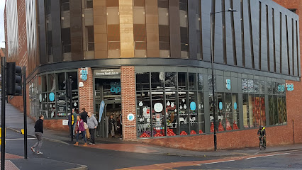

Student Union
The Student Union hosts multiple indoor venues each equipped with ample seating space.


coffey revolution

coffey revolution is a large cafe that serves a wide selection of coffee iced and hot, tea, lattes, hot chocolate and smoothies
It also serves hot grilled and cold sandwiches or a savoury snack such as a muffin or locally sourced cake.
Open weekdays from 8am-5pm, Saturday 10am-4pm, and Sunday 12pm-5pm
new leaf

new leaf is a sustainable vegan salad bar that severs salads, hot pots and wraps.
Open weekdays from 11pm-2:30am.
pearls

pearls is a small buble tea shop that supplies a varity of flavors hot or cold
Open weekdays from 11am-6pm
grill and go

Grill and Go sell healthy and customisable, burritos, burrito bowls, hot wraps and wedges. for £5 + £1 for wedges
Open weekdays 11am-2:30pm
The Diamond Cafe

The Diamond Cafe has a built-in grillNgo that serves burritos, burrito bowls and fries just like the one in the student union.
Additionally it serves coffee/ latte, freshly baked brownies and flapjacks that are highly rated and a £5 meal deal that gives you a choice of a sandwich, toasty or melt.
Open weekdays 8am-4pm
John's Van

John's Van is a street food vendor that sells hot sandwiches, burgers, bagels, omelettes, and cake.
Open weekdays 7am-2:30pm
tesco's express

Tesco's is a short walk from the diamond and serves a £3.60 meal deal(with club card) that provides the typical range of sandwiches, samosas or wraps for main, pork pies, sausage roll, fresh pastries, and more for size, as well as a wide selection of drinks.
Open weekdays and Saturday 8am-10pm and Sunday 12:30pm-5pm
Co-op

the Co-op is a short walk from the student union and provides a £4 meal deal that with a choice of pasta, wrap, samosas, or sandwich for main, steak slice, cornish pasty, or sweat treat for side, and almost any drink you can think of
Open 7am-10pm weekdays and Saturday and 8am-10pm Sunday